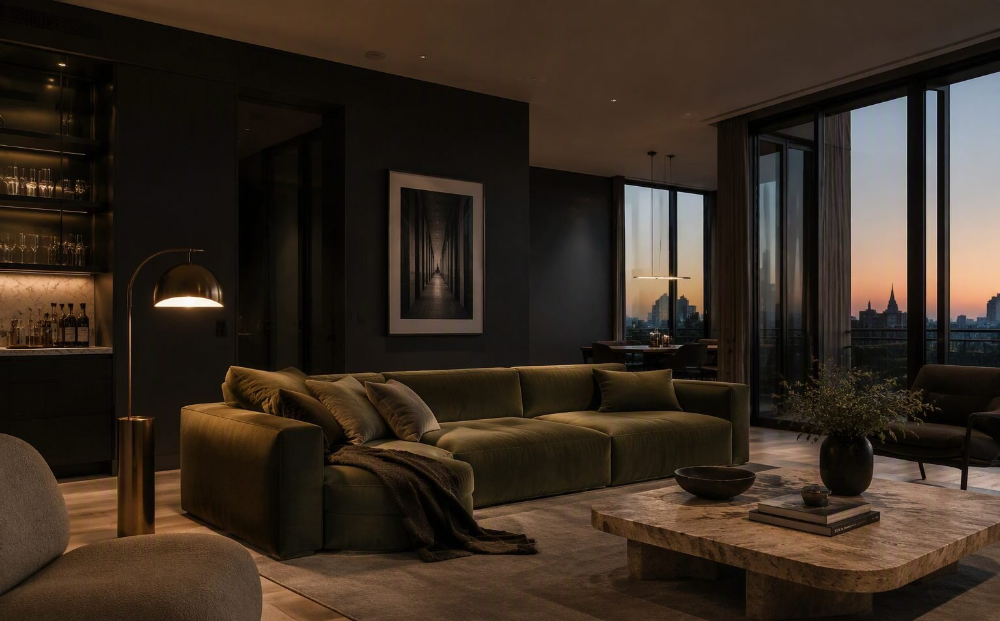
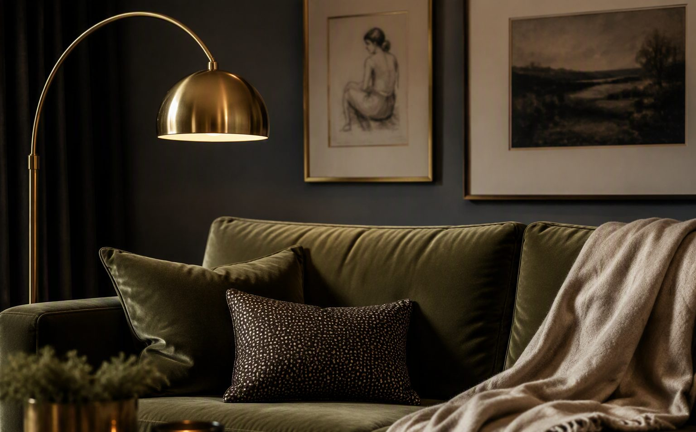
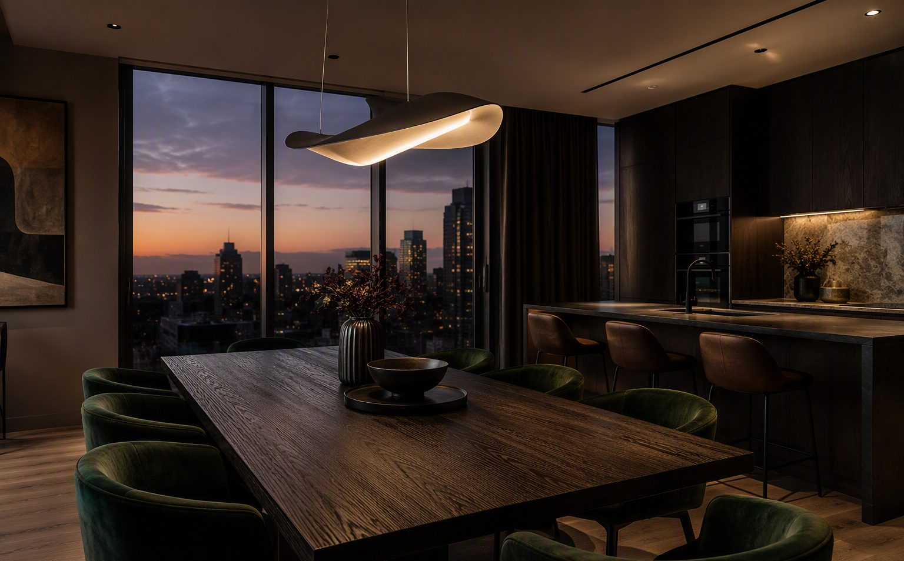

Проект / 001
Апартамент „Витоша“
Дом, в който тъмните тонове създават спокойствие, а не тежест.
Този апартамент в подножието на Витоша е проектиран около идеята за вечерен уют — дълбоки въглени стени, маслиненозелен кадифен диван и топла месингова светлина, която оформя пространството като сцена.
Травертинът на масата и дъбовият под балансират тъмната палитра, а панорамните прозорци превръщат залеза в част от интериора.


Следващ проект